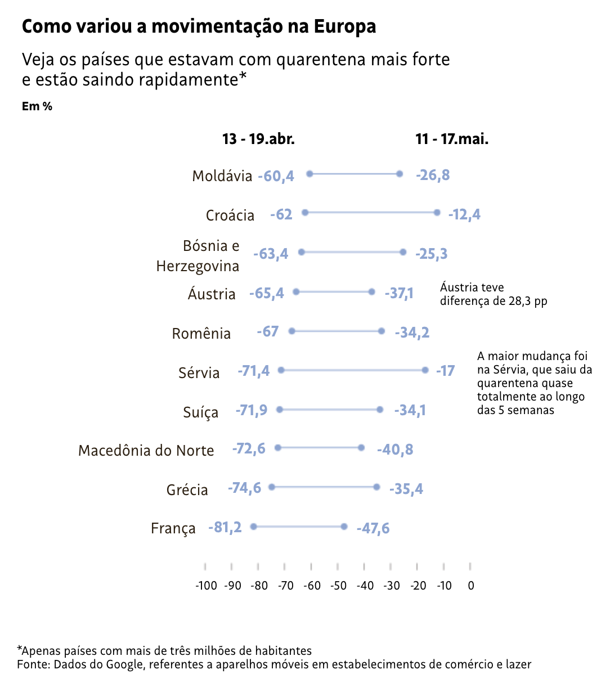
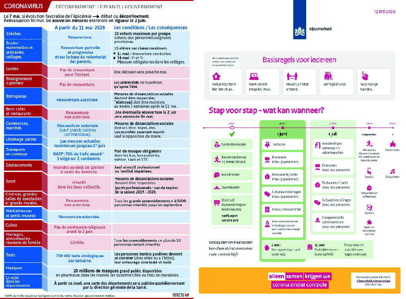
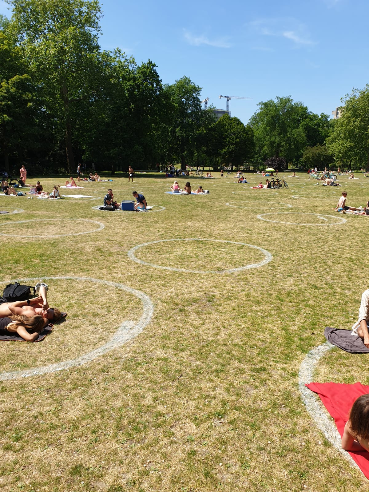
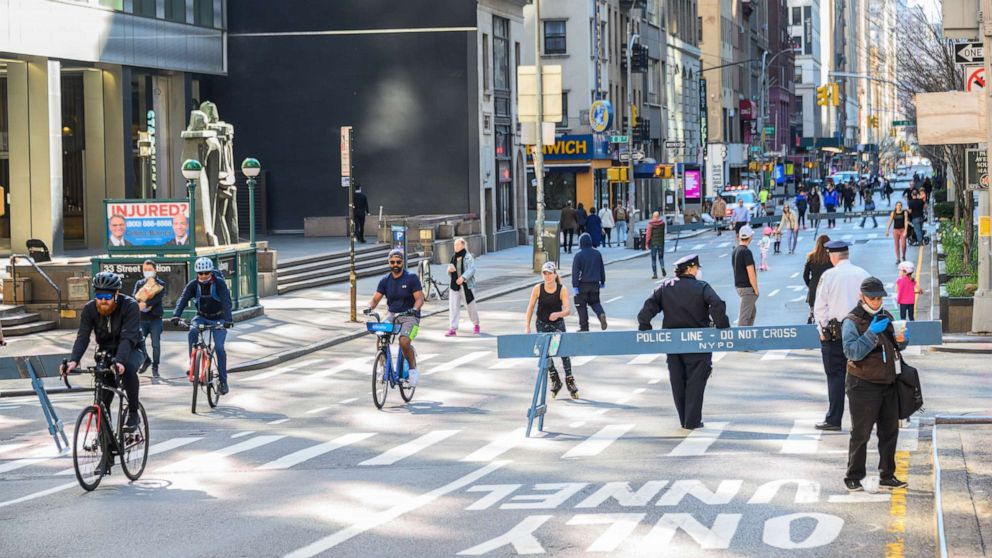

©2017 LabRua
Template: Bootstrapious
+ Kishan B

O uso da cidade durante a pandemia: experiências pós isolamento social
2020-01-06; pandemia, covid19, espaços públicos, boas práticas
Buscando informações sobre ações que outros países estão fazendo em relação ao uso da cidade durante a pandemia do COVID-19, em especial os países que começaram um processo de desconfinamento, decidi apontar por aqui algumas dessas ações. Talvez algumas delas pode nos ajudar a pensar nas cidades brasileiras em um futuro breve de pós-isolamento social.
Foto de capa: Justin Sullivan [1].
por Aída Pontes
Em países europeus e norte americanos, após passar meses de isolamento social ou lockdown(1) - dependendo da política que cada país adotou - estamos observando um processo de desconfinamento da população, ou seja, um retorno gradual às atividades cotidianas. Essas ações estão diretamente relacionadas com o uso do espaço público e cabe citar e refletir sobre algumas delas para, assim, começarmos a refletir também como podemos dar diretrizes para as cidades brasileiras em um esperado futuro de volta ao uso dos espaços públicos. Vale salientar que neste momento se acredita que essas ações/diretrizes estarão presentes enquanto não houver uma vacina para o Covid-19.
Para conseguir informações sobre como está funcionando o desconfinamento em diversos países, além de buscar na internet, eu conversei com três amigos que estão morando em Amsterdam, Berlim e Paris. Eles me mandaram alguns materiais que tiveram acesso mas principalmente me contaram do dia-a-dia e o quanto as pessoas estão de fato respeitando as orientações do poder público. Além das cidades citadas, serão relatadas ações em Barcelona, Nova York, Montréal e Bogotá. Algumas ações relatadas são políticas nacionais.
Em todos os países estudados, as diretrizes partem da premissa que é necessário um distanciamento entre as pessoas, devido à forma de contato da COVID-19 ser principalmente pelo espirro, tosse, catarro, gotículas de saliva e contato com pessoa próxima infectada, como toque ou aperto de mão. Desta forma, têm-se indicações de manter uma distância de outras pessoas de pelo menos 1 metro (alguns países adotam a distância de 1,5 metros), o que influencia nas áreas disponíveis para as pessoas caminharem, pedalarem ou permanecerem nos espaços públicos.
As decisões de relaxamento nas regras de uso dos diferentes espaços das cidades estão relacionadas ao decréscimo de mortes. A Folha de São Paulo trouxe no dia 25 de maio [2] dados que mostram a variação de movimentação em diversos países europeus, dados esses baseados no monitoramento do google(2). No gráfico abaixo, percebe-se que o país que o isolamento mais afrouxou foi na Sérvia.
Variação da movimentação de pessoas em alguns países europeus realizado pela Folha de São Paulo com base no monitoramento de deslocamento realizado pelo Google [2]

Planejamento passo a passo
Voltando a falar das ações que esses países estão adotando, as questões chave em todos os exemplos citados é de evitar aglomeração de pessoas e que elas consigam manter um distanciamento entre elas. A volta em usar os espaços públicos está se dando de forma gradual, com medidas que se afrouxam aos poucos, e depende do tipo de estabelecimento. Escolas, restaurantes, bares, cinemas etc. tem seu tempo de reabertura e também, dependendo do lugar, o limite de pessoas para cada fase do desconfinamento.
Folderes que resumem o planejamento de deconfinamento da França e da Holanda, respectivamente

No dia 28 de maio a França anunciou a fase 2 do desconfinamento [3]. Como dividiram o país em regiões que contenham mais ou menos riscos, as ações estão relacionadas com essas regiões, onde na verde, risco mor de contaminação, há uma permissão maior de abertura dos espaços que a região laranja, com mais riscos devido ao número de pessoas infectadas. Um exemplo dessa diferença é que na primeira região os restaurantes vão voltar a funcionar, com algumas medidas de distanciamento, enquanto na segunda apenas as mesas externas serão permitidas.
Os parques
Durante a primeira fase de desconfinamento, os parques em Paris estavam proibidos de acesso pelo o poder executivo, mas houve uma grande polêmica sobre essa questão, pois a prefeita Anne Hidalgo era a favor da abertura por permitir que os parisienses aproveitassem o verão garantindo o distanciamento social entre eles. O entendimento é que a população não ia deixar de sair, já que estava permitido, e que quanto mais espaço disponível houver, maior será as chances de manter um distanciamento adequado.
Nesse primeiro período de desconfinamento, a capital teve diversos casos de aglomeração nas áreas com acesso permitido ao público, notadamente o Canal Saint Martin. Outros lugares na França, como em Nantes, já estão abrindo seus parques para uso do público, isso se deu por conta da divisão da cidade em áreas com maior ou menor risco. A segunda fase do desconfinamento liberou o uso dos parques.
Na Holanda os parques não fecharam durante o isolamento social, mas houve um controle de quem entra e sai para evitar aglomerações de pessoas, e assim continua durante esse período de adaptação. O maior parque de Amsterdam, o Vondelpark, teve fila para entrar na quinta-feira passada, quando a temperatura chegou a 27 graus. Tanto na Holanda como em diversos outros locais, uma intervenção que está sendo repetida é a delimitação de áreas específicas para as pessoas ficarem mantendo o distanciamento através de círculos marcados no solo. As fotos abaixo são exemplos na Holanda e nos EUA. Prefeituras de cidades que tem praia também estão tomando medidas para delimitar espaços na areia da praia.
Círculos demarcando o uso em parques respeitando o distanciamento social. As fotos abaixo são em Rotterdam e São Francisco, mas intervenções similares estão ocorrendo em diversos países. Fotos:@jasper.87 e Justin Sullivan


As ruas
Encorajar o caminhar e o uso de bicicletas como meio de transporte é uma diretriz positiva para as cidades que é largamente conhecida pelos urbanistas e adotada na nossa legislação nacional sobre mobilidade urbana. Ademais o incentivo ao uso de meios de transporte não motorizados corrobora também com o objetivo geral de saúde pública para minimizar a disseminação do COVID-19, pois o risco de infectar outras pessoas é maior quando há o uso de transporte público ou de transporte semi-privado, como táxis e sistemas de transporte por aplicativo. Em Berlim, por exemplo, apesar do transporte público estar funcionando normalmente, as pessoas estão preferindo usar a bicicleta por se sentirem mais seguros. No entanto, em Berlim como em diversos outros lugares, as calçadas e ciclovias em sua grande maioria não tem uma largura suficiente para permitir um distanciamento adequado.
Com base nisso, várias cidades no mundo estão criando o que está sendo chamado de ciclovias pop up. Usando marcações rápidas e/ou temporárias, os governos estão redirecionando espaço nas vias que antes era utilizado para veículos motorizados para o uso seja de bicicletas, de pedestres ou de espaços de permanência de pessoas, como extensão de áreas para estabelecimentos como restaurantes e bares.
Faixas de circulação de veículos viraram ciclovias em cidades como Paris, Berlim e Bogotá. Espaços que eram destinados para estacionamento de veículos se transformaram em extensão de calçadas em Montréal e em espaços para mesas de restaurantes e bares em Barcelona [4].
Ciclovia pop up em Berlim [5]

Em Nova York, com o intuito de garantir a distância social, eles estão implantando o projeto chamado de open street, onde 65 quilômetros de ruas estão fechadas para carros e abertas para pedestres. O plano é chegar a 160 quilômetros de ruas dedicadas aos não-motorizados. Alguns jornais supõem que essas intervenção pode ficar permanente mesmo após o fim da pandemia [6].
Bloqueio de ruas em Nova York. Foto Noam Galai

Independente da diretriz, é preciso pensar na volta ao uso do espaço público com cuidado e respeito aos cidadãos. Para repensar esse uso, a NACTO(3) elaborou uma cartilha de como intervir nos espaços públicos considerando as indicações sanitárias. Eu acredito que seja importante também ouvir a população, buscar o máximo possível entender suas necessidades, e não apenas os empresários, evitando colocar a economia acima do bem social como se tem visto frequentemente no Brasil.
Capa do documento disponibilizado pela NACTO [7]

Além disso, faz-se necessário dados para entender as necessidades e dificuldades da população como um todo. A Rede Brasileira de Urbanismo Colaborativo, da qual o LabRua faz parte, está realizando uma pesquisa para entender como as pessoas estão tendo acesso à cidade. Realizar um diagnóstico é essencial para conseguirmos pensar em diretrizes de políticas públicas que sejam positivas para o espaço urbano.
A maioria das ações são baseadas em países do hemisfério norte por já estarem no processo de sair do isolamento social, enquanto que outros países, como na América Latina, que ainda na fase inicial desse processo em alguns países.
As intervenções apresentadas aqui são algumas entre tantas que podem ser pensadas e adotadas para nossas cidades, é importante pensar nas características de cada território para aplicação dessas e de outras soluções que sejam exclusivas e específicas de cada localidade. Para tanto, as desigualdades nas cidades brasileiras devem ser levadas em consideração: há muita disparidades de tecidos urbanos que afetam nas diferenças em relação à presença de opções de transporte, espaços públicos, entre outras necessidades. Não podemos desconsiderar que uma parcela grande da população brasileira não tem uma casa adequada para ficar, quando nem casa possui.
É preciso discutir o uso da cidade neste momento de isolamento social para que as mudanças que sejam feitas agora e no futuro sejam positivas para o meio urbano e, assim, tentar aproveitar esse tempo que está mexendo com todos para mexer positivamente nas nossas cidades, com um respeito maior aos nossos espaços públicos e à população que circula por eles.
Notas
(1) Lockdown é um protocolo de isolamento que alguns países estão adotando durante a pandemia de Covid-19, nos quais as pessoas só podem sair de casa com uma permissão específica e apenas para situações básicas como comprar alimento.
[2] O Google publicou dados de monitoramento de deslocamento das pessoas em quase todos os países do mundo, nele há tendências de deslocamento ao longo do tempo por região e em diferentes categorias de locais, como varejo e lazer, mercados e farmácias, parques, estações de transporte público, locais de trabalho e áreas residenciais (https://www.google.com/covid19/mobility/).
[3] A NACTO é uma associação Estadunidense que discute, através do viés da mobilidade urbana, criar cidades melhores para as pessoas (https://nacto.org/).
Referências
referência da foto da capa
[1] Foto da capa https://sf.curbed.com/2020/5/22/21266247/san-francisco-parks-social-distancing-circles-coronavirus
[2] Matéria da Folha de São Paulo https://www1.folha.uol.com.br/mundo/2020/05/dados-mostram-que-franca-sai-de-quarentena-rigida-para-abertura-veloz.shtml
[3] Segunda fase de desconfinamento de Paris http://www.leparisien.fr/societe/deconfinement-l-ile-de-france-passe-en-orange-plus-aucun-departement-en-rouge-28-05-2020-8325639.php
[4] Dados sobre Barcelona https://www.euroweeklynews.com/2020/05/06/bars-and-restaurants-in-spains-barcelona-to-get-more-space-for-terraces-and-rate-relief-until-the-end-of-the-year-to-kickstart-the-industry/
[5] Dados sobre Berlim https://apnews.com/122440a6a0bda1bad3f3f63d0d7322ef
[6] Dados sobre Nova York https://nyc.streetsblog.org/2020/03/27/eyes-on-the-street-de-blasios-open-streets-plan-is-an-over-policed-mess/
[7] Material da Nacto https://nacto.org/wp-content/uploads/2020/05/NACTO_Streets-for-Pandemic-Response-and-Recovery_2020-05-21.pdf